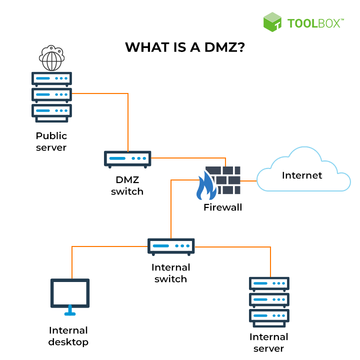

Virustorjunta käsittää tietokoneohjelmia, joilla etsitään ja tuhotaan haitallisia prosesseja etäpisteestä tai paikallisesta järjestelmästä.
Tietotekniikan järjestelmä, jonka tarkoitus on estää asiaton pääst verkosta toiseen.
Varsinkin internetistä lähiverkkoon.
Koostuu useimmiten kahdenlaisista komponenteista:
Turvallisuuden osa-alue, jolla pyritään sähköisen ja verkotetun yhteiskunnan turvallisuuteen.
Useat yhteiskunnan kriittiset toiminnot ovat riippuvaisia tietojärjestelmien ja verkkojen toimivuudesta.
Näitä ovat mm:
DMZ eli demilitarisoitu alue (demilitarized zone)
Se on verkkoalue, joka parantaa tietoturvaa
Se sijaitsee yrityksen sisäverkon ja Internetin välissä

GDPR tulee sanoista General Data Protection Regulation eli suomeksi yleinen tietosuoja-asetus.
Se on henkilötietojen käsittelyä säätävä laki, jota alettiin soveltamaan kaikissa EU-maissa keväällä 2018
Se sisältää erilaisia oikeuksia esim.